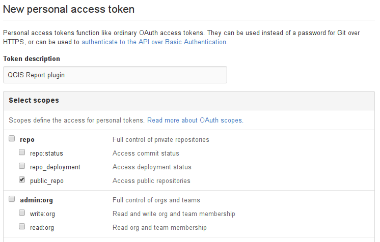
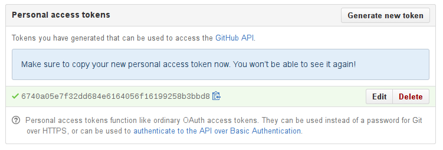

Using Report Plugin with GitHub
The plugin needs access to the GitHub repositories to submit new issues. In order to authenticate with GitHub using your account, it needs an access token. A token is a series of numbers and letters and serves as a password for selected operations.
So please, do not share the token with others.
Hot to Generate a Token
GitHub API token can be obtained from the GitHub website in few simple steps:
- Open New personal access token page on GitHub.
GitHub will ask you to log in to your account first (or if you are logged in already, it will ask
for password confirmation):

-
After login to GitHub, you will see a form to set up a new token. You will need to:
- Enter token description (for example "QGIS Report plugin")
- Select public_repo from the available scopes
The filled in form should look like this:

Click Generate token button at the bottom of the page
A new page will be shown with your access token:

Copy and paste the generated token from the green box to the configuration dialog of Report plugin.